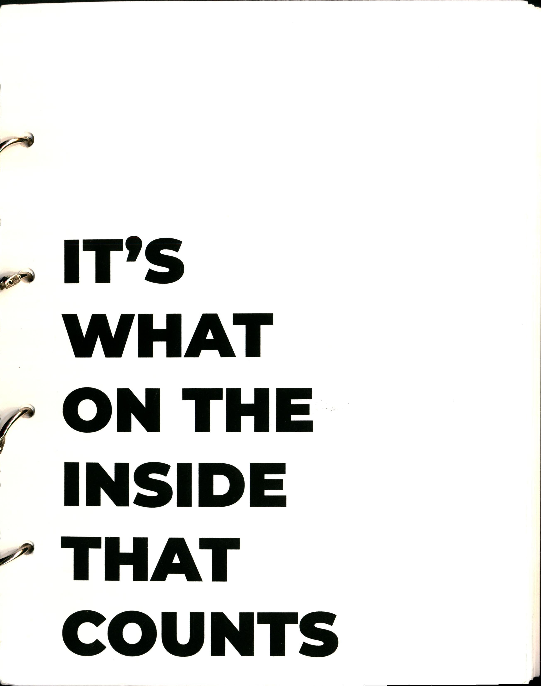

IT'S WHATS ON THE
INSIDE THAT COUNTS

IT'S WHATS... is a collection of personal recipes from classmates.

Each spread is dedicated to one recipe, featuring an antedote about the recipe and a distorted image of the recipe, which also doubles as a pocket which contains the actual recipe card.